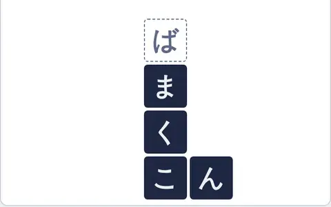
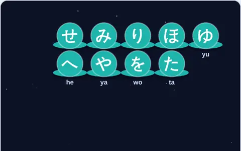
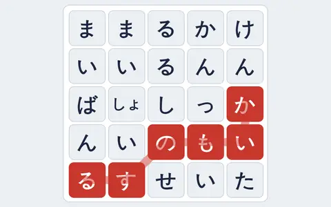
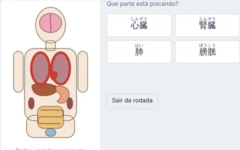
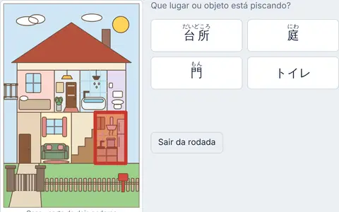
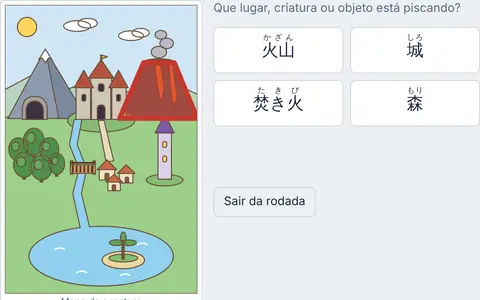
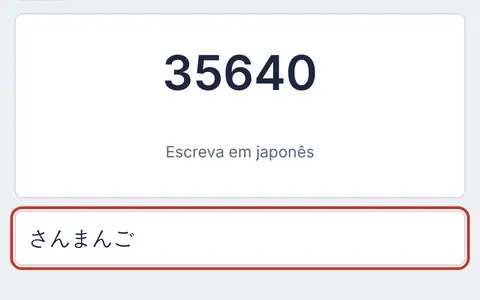
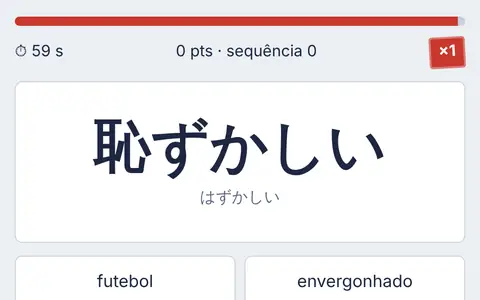
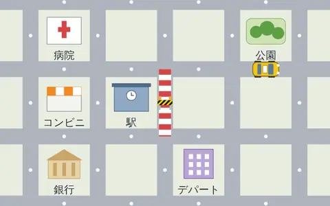

O Ayumi (歩み, “passo a passo”) é um site gratuito para aprender japonês em português: gramática do hiragana ao avançado, mais de 2.300 palavras com frases de exemplo e áudio, treino de kanji, conjugação e contadores, textos de leitura e mini games. Tudo funciona direto no navegador, sem cadastro, e o seu progresso fica salvo no seu aparelho.
Por onde começar?
Começando do zero?
Comece pela gramática: hiragana, katakana e as primeiras frases, em ordem.
Quer ampliar o vocabulário?
Mais de 2.300 palavras em categorias, com frases de exemplo e áudio.
Quer praticar?
Provas, conjugação, lacunas, ditado, kanji e leitura.
Aprender brincando?
Mini games para treinar kana, palavras e instruções.
Praticar
Quizzes e treinos para fixar o que você estudou.
Prova de gramáticaPerguntas por nível: Básico, Intermediário e Avançado.
Conjugação de verbosVeja o verbo e conjugue na forma pedida.
Conjugação de adjetivosO mesmo treino, com adjetivos.
LacunaComplete a frase com a palavra ou a partícula que falta.
DitadoOuça e responda: escolha a opção ou digite o que ouviu.
ContadoresVeja o objeto e escolha o contador certo.
KanjiTreine as leituras dos kanji por nível JLPT.
LeituraHistórias e diálogos com perguntas de compreensão.
Aprender brincando
Mini games para treinar sem perceber.

Kana no AmeOs kana caem; forme palavras na horizontal ou na vertical.
Space KanaDigite o romaji para destruir os kana invasores.
言の葉 KotonohaLigue kana vizinhos para formar palavras; as casas somem e as de cima caem.
体めぐり Karada MeguriDescubra o nome de cada parte do corpo, do rosto aos órgãos.
暮らしめぐり Kurashi MeguriPasseie pela casa e descubra o nome dos cômodos, móveis e objetos.
伝説めぐり Densetsu MeguriExplore um mundo de lendas e descubra o nome de heróis, armas, magos e monstros.
数を書こう Kazu o kakouEscreva números em japonês, leia o kanji ou ouça e digite: de 0 a 99999. 時計の練習 Tokei no renshuuVeja o relógio e escreva que horas são em japonês: de em ponto a qualquer minuto.
Velocidade60 segundos: responda o máximo que conseguir.
タクシーの冒険 Takushii no Bouken Leia as instruções em japonês e leve o táxi ao destino. Modo B: seguir as instruçõesModo A: dar as instruções